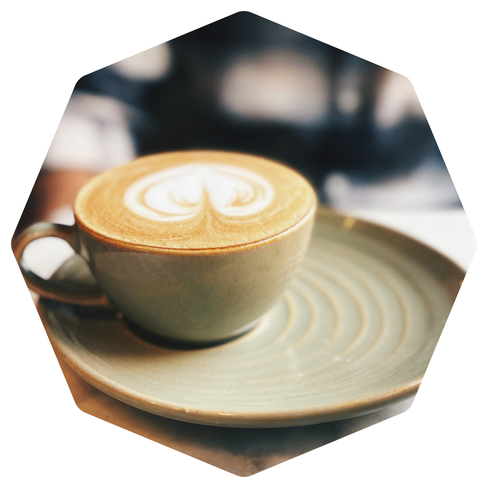
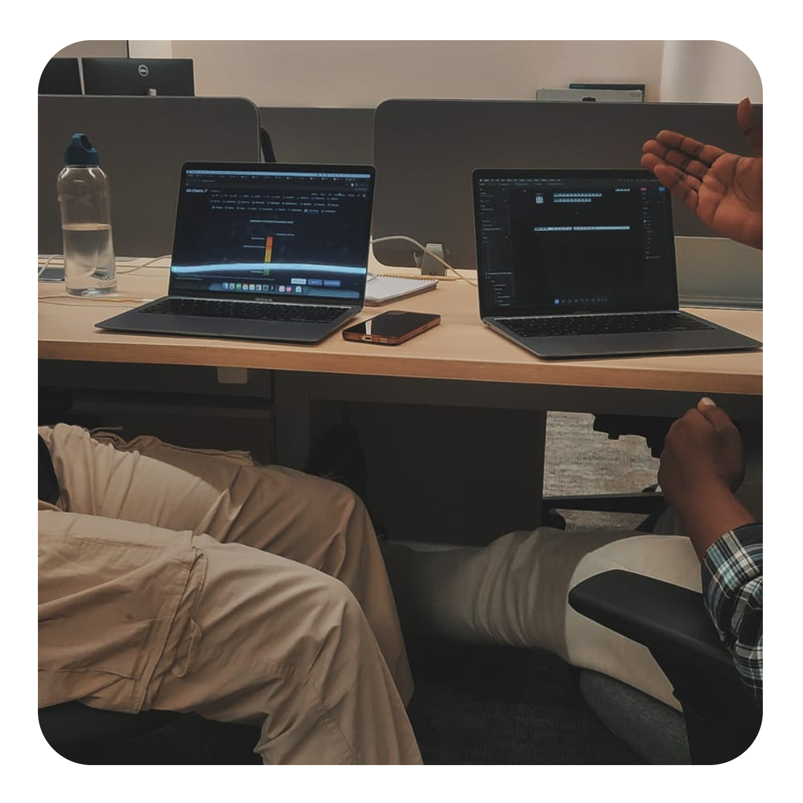
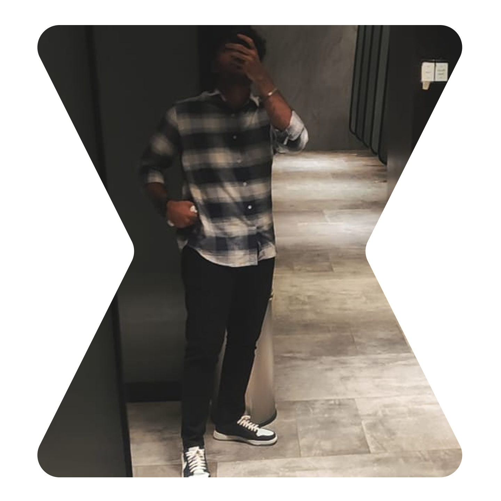
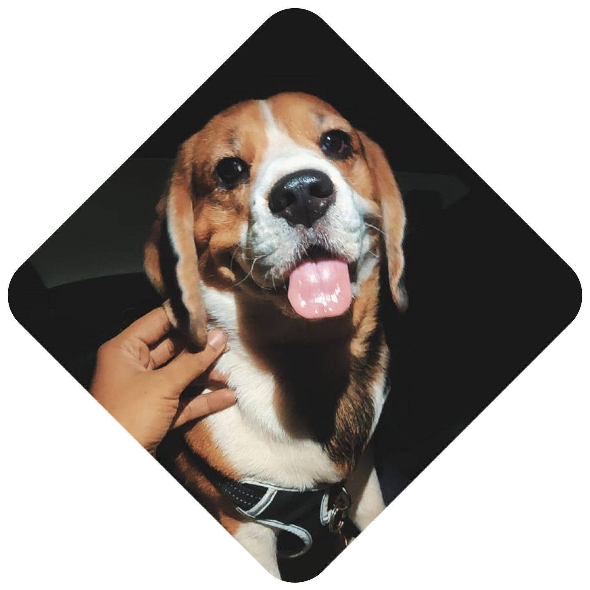
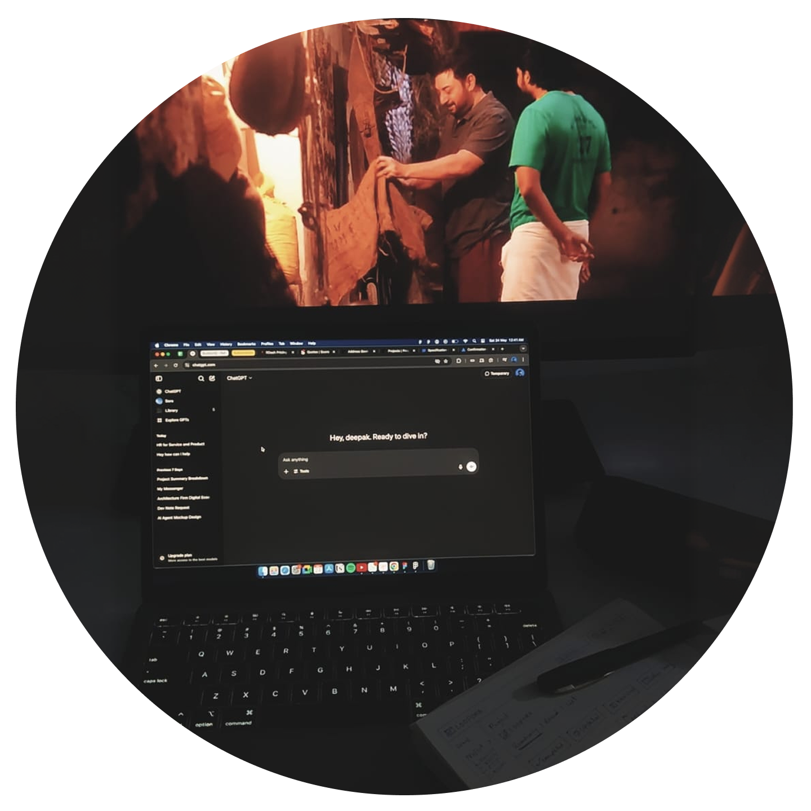

Hi, I'm Deepak
I graduated with a Bachelor of Design in Interior Architecture, and quietly switched canvases somewhere along the way. Interior design taught me to think about how people move through a space, where they pause, what they reach for. Turns out product design is the same job, just on a smaller surface with bigger problems to solve.
Close to two years, as a product designer at a startup, and I work with other AI startups to take them from zero to one, that fuzzy stage where the product is still figuring out what it wants to be, and someone needs to make it feel like a real thing.
Right now I'm focused on products, figuring out what good design even means when the interface has to share the work with a model. It's early, it's messy, and it's the most interesting problem I've worked on so far.
Experience

Dexio LabX Pvt. Ltd
Product designer - I- Led end-to-end design for B2B2C SaaS products, shaping user journeys from zero-to-one and improving usability across high-frequency workflows.
- Built and scaled a reusable design system, enabling faster feature shipping and consistent UI across multiple products and client projects.
- Owned multiple client engagements, translating ambiguous business requirements into structured product solutions and shipped features.
- Collaborated closely with engineering to ship MVPs fast, iterate based on feedback, and reduce design-to-development turnaround time.
- Contributed to live SaaS products by supporting UX research, wireframing, and prototyping, accelerating early-stage product validation.
- Designed visual and marketing assets (logos, illustrations, product creatives) used across product interfaces and client communications.
- Collaborated with senior designers to translate ideas into functional, production-ready interfaces.
I can do this all day (Skills)
Tools that help me daily
Figma
Design
Google Antigravity
AI CodingVS Code
CodingPhotoshop
Image EditingClaude
Research & Vibe codingChatGPT
Content writingFun facts about me!

Ritual
Coffee, mostly. But anything with caffeine works. It keeps things moving.

Collaboration
Ideas get sharper in conversation. Half strategy, half "which café next?" that's where the good stuff happens.

Flow
I don't chase ideas. They show up when I'm moving, observing, or just letting things connect.

Soft Corner
I have a soft spot for dogs and cats. This is Dinkie - not mine, but close enough to count.

Atmosphere
Films, songs. Something light in the background. Keeps me relaxed. Keeps the work fast.
Ritual
Coffee, mostly. But anything with caffeine works. It keeps things moving.
Collaboration
Ideas get sharper in conversation. Half strategy, half "which café next?" that's where the good stuff happens.
Flow
I don't chase ideas. They show up when I'm moving, observing, or just letting things connect.
Soft Corner
I have a soft spot for dogs and cats. This is Dinkie - not mine, but close enough to count.
Atmosphere
Films, songs. Something light in the background. Keeps me relaxed. Keeps the work fast.
Got a complex product that needs clarity?
That's exactly what I do.
Whether you're shaping something from zero, untangling an older product that's grown in too many directions, or building a design system that needs to actually scale.
I'd love to hear what you're working on.
Let's make it together